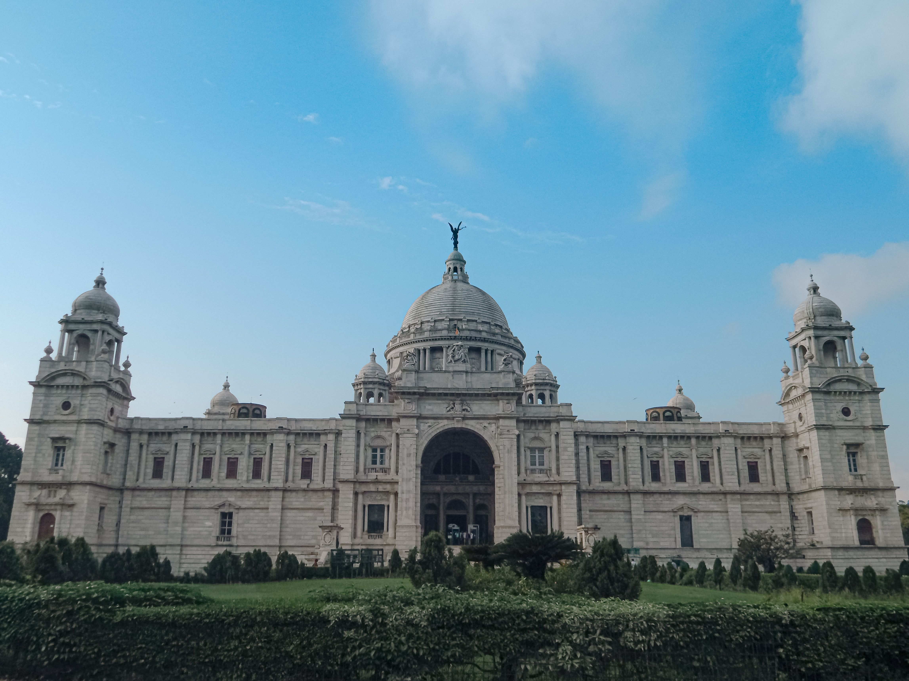

ময়মনসিংহ বাংলাদেশের ইতিহাস, ঐতিহ্য ও সংস্কৃতিতে সমৃদ্ধ একটি গুরুত্বপূর্ণ জনপদ।
ব্রহ্মপুত্র নদের স্নিগ্ধ সৌন্দর্য, প্রাকৃতিক পরিবেশ এবং সমৃদ্ধ লোকসংস্কৃতি এ অঞ্চলকে স্বতন্ত্র বৈশিষ্ট্যে অনন্য করে তুলেছে। শিক্ষা, সাহিত্য, শিল্পকলা ও সাংস্কৃতিক চর্চায় ময়মনসিংহের অবদান অত্যন্ত গৌরবময়।
এখানকার মানুষের আন্তরিকতা, ঐতিহ্যবোধ ও সম্প্রীতি এ অঞ্চলের সৌন্দর্যকে আরও মহিমান্বিত করেছে। ইতিহ্যে সমৃদ্ধ, সৌন্দর্যে অনন্য—আমাদের অহংকার, আমাদের প্রিয় ময়মনসিংহ।

pavel